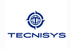

Bem-vindo à minha primeira incursão no mundo do desenvolvimento web!
Esse e meu Primeiro Projeto pessoal, utilizando as linguagens de hipertexto e estilização ( HTML5 e CSS3), fazendo o uso de uma API para o envio de formularios, diretamente para a caixa de entrada do e-mail de contato.
Sobre Mim
Atualmente estou no 2º Período do Curso Bacharelado de “Ciências da Computação”, na
instituição Estácio de Sá.
Estou em busca de uma oportunidade na área da tecnologia, afim de obter experiencia e conhecimento pratico, em qualquer área ( Dados, Desenvolvimento, Segurança, Rede, Suporte entre outras).
Não tenho exigências perante a contratação, seja CLT ou Estagio, estou disposto a me empenhar e dedicar ao máximo para entregar valor para a organização.
Formação
Ciencias da Computação ('2º Semestre')
Tecnico em Secretariado
Cursos
Trilha de Formação PostgreSYS
Tenho muito apreço por esse curso, pois através dele tive meu primeiro contato com uma tecnologia de alto nível, e passei de usuário leigo a apreciador e estudante consistente de tecnologia.
Este Curso e totalmente completo, abordando do básico ao avançado sobre o sistema de
gerenciamento de banco de dados PostgreSQL, totalmente de código aberto mais robusto e
completo atualmente, onde pode se contar com uma plataforma de ferramentas solidas e
seguras para seu ambiente, sem contar que dispõem de um incrível orquestrador que
agiliza e facilita desde de a criação do ambiente ate a manipulação de arquivos, auditoria
e recuperação de desastres.
Atividades despenhadas no Curso: A instituição disponibilizou uma ISO para que fosse
configurada o IP e pode-se ser feita todas as atividades laboratoriais do curso e também
próprias, executei a instalação da plataforma e também a criação do cluster totalmente do
zero. Executei atividade de orquestração através do Pgsmart, e também edição de arquivos
através do editor de texto ASCII do Linux (VI), executei a criação de ambientes de alta
disponibilidade com um máster e duas reaplicas que recebiam os dados de forma
assíncrona, fiz backup e restore com pgbackrest e com o pgdump.
Esse curso foi meu primeiro contato com uma tecnologia de alto nível, então pude aprender
muito pois o curso abordou o assunto por completo, desde a instanciação da VM, e acesso
por SSH, e gestão de Memoria do Hardware.
Esses são os badges do treinamento, acessando eles você podera ter mais informações sobre cada modulo:

Formação PostgreSYS – Administração de PostgreSQL
Formação PostgreSYS – Pool de Conexões
Formação PostgreSYS – Recuperação de Desastre
Formação PostgreSYS – Alta Disponibilidade
Desenvolvimento WEB
O Curso conta com os conceitos básicos de desenvolvimento WEB, como criação a de
paginas estáticas e dinâmicas, estilização das mesmas e de formulários por meio do CSS,
também aborda a questão de formulários em HTML e o tratamento dos dados inseridos por
meio do PHP.
Atividades desempenhadas: Criei uma pagina estática como primeiro projeto, utilizando
somente as linguagens de hiper testo e estilização, e fiz o deploy no github. O curso não
abordou tanto a questão da responsividade com implementação do JAVAscript, por tambem
fazer abordagem de Frameworks como o Bootstrap.
Paradigmas de Linguagens de Programação em Python
O curso propõem os conceitos básicos da linguagem Python como: ( Tipos de Dados e
Expressões, Atribuição de Entrada e saída de Dados, Estruturas de Decisão e Repetição,
Conceitos de Subprogramas, Bibliotecas em Python, Eventos em Python, Orientação a
Objetos, Heranças e Polimorfismo, Orientação a Objetos aplicados a Python e outras
existentes no mercado, Computação Concorrente em Python, Desenvolvimento Web em
Python e Ciências de Dados).
Atividades desempenhadas: Através do Ambiente de Desenvolvimento Integrado(IDE),criei
códigos básicos responsivos como questionário de inserção de dados pessoais do tipo
string, soma de dois números, código de identificação de primitivos entre outros. Fiz uso do
Google Colab um sistema mais simples e sem robustes, com a finalidade de abstrair e
compreender a sintaxe da linguagem. Como o curso foca em soluções desenvolvidas em
Python, estou optando por utilizar a IDE Pycharm por ser mais robusta e apropriada.
Auditoria de Logs
Curso voltado para auditas os logs em sistemas Linux e Banco de Dados, através do
serviços do ( syslog, syslog-ng e rsyslog ) detectando problemas, atividades indevidas e
monitoramento em tempo real dos serviços, também aborda ferramentas.
Atividades desempenhadas: Ate o momento de dissertação deste curriculum, só vi os
conceitos básicos do curso, como facilidade, nível e arquivo. E também criação de
compressão de Log.
Trilha de Formação TDP ( Tecnisys Data Plataforme )
Curso voltado para o Ambiente de Big Data, que abordas os conceitos de apresentação da
plataforma, exploração e gerenciamento, Processamento Distribuído no TDP utilizando o
Apache Spark, Gestão de fluxos de dados usando Nifi, indexação e busca textual em Solr no
TDP e Processamento de streaming com o Kafka no TDP).
Atividades desempenhadas: Ate o devido momento não tenho recurso
computacional suficiente para a execução do ambiente, mais sigo aprendendo sobre a
plataforma e seus recursos.
Esses são os badges do treinamento, acessando eles você podera ter mais informações sobre cada modulo:
Formação TDP – Essentials
Administração e dométicio do ambiente TDP - Básico